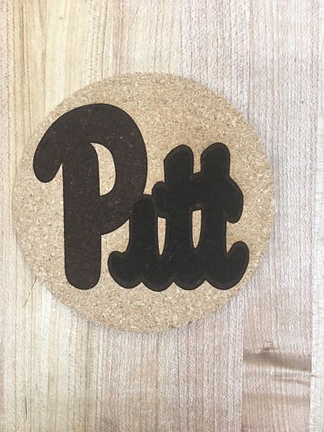
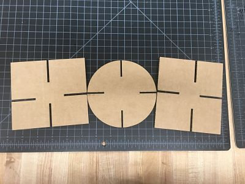
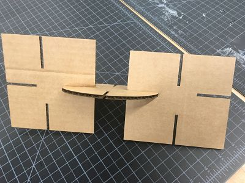
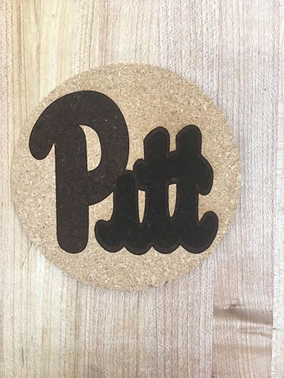
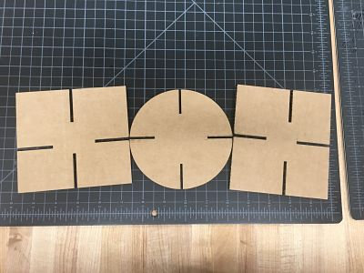
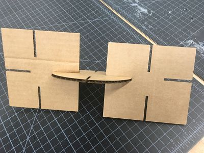

This week we got to make objects with the laser cutter. The first thing I made with the laser cutter is that I made a clock that is very similiar to a bullseye which makes it easy to tell the time, and the process was that I put a picture of a bullseye onto corel draw and I made the picture a bitmap then into a detailed logo which allowed me to edit the image and I inputed numbers amd after that set some parts of the image to hairline so the printer will cut that part out and after doing that I went to the laser cutter and put my file in the computer and printed the file with the correct laser cutter material setting for printing and the final reasult came out well. The next object I got make is a cork coaster, and I made the coaster with a University of Pittsburgh picture on it because it is the college my sister attends and I made this by making a file with a circle and the Pitt image in the center and I set the circle so that it will be cut instead of engraved by the laser cutter and I set the printer for cork and I put the correct printer settings and the final reasult came out really well. The next object are three puzzle pieces out of cardboard which came out too big at first but I changed the measurments to make them more accurate and I did by making the shapes in a corel draw file and I put the file in the computer and then I set the laser cutter to the correct settings for cardboard and it took me two tries for me to get the shapes correct for me. The next thing I made was a water bottle using the rotarary attachment on the laser cutter which I had to attach and I used the Corel draw software and I saved the file and then I put the water bottle on the attachment and focused the laser cutter and from there I put the file on the computer connected to printer and printed the design I put witht the approiate settings needed.
 





 (1)_opt.jpg)